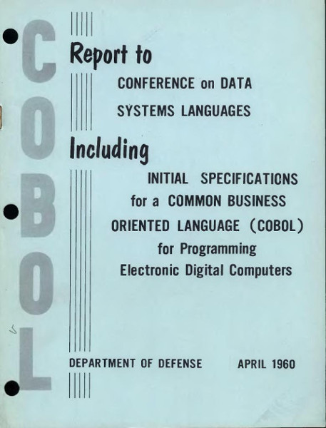
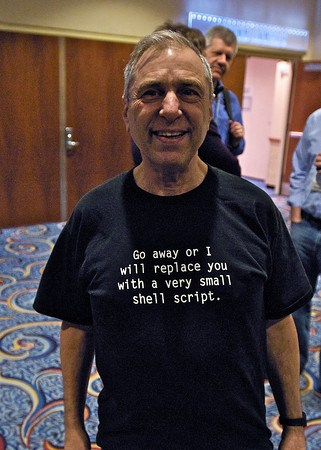
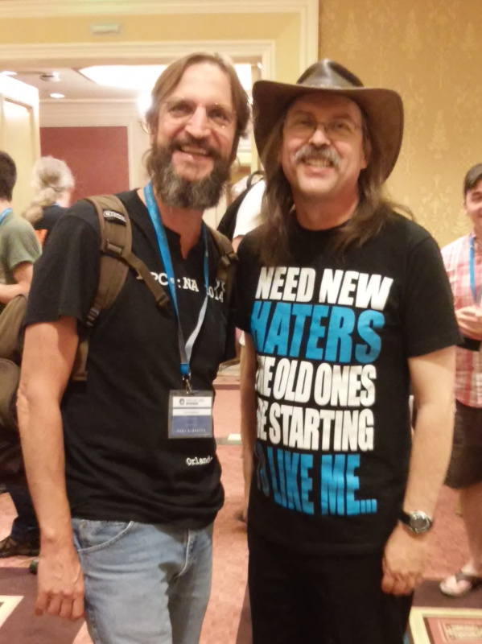
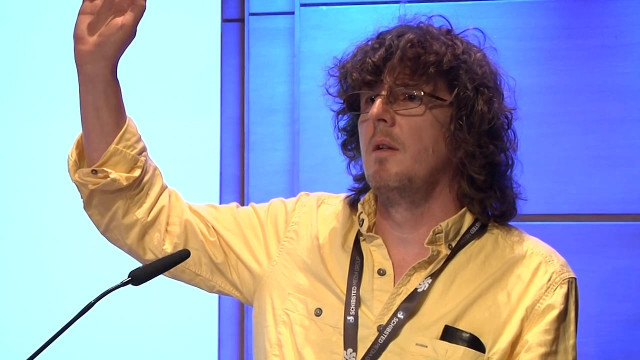
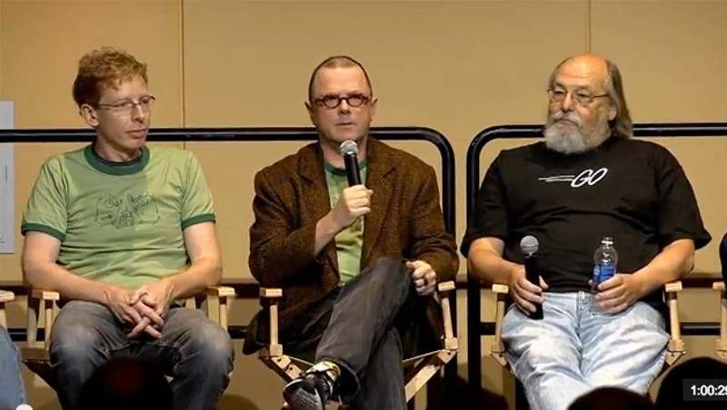
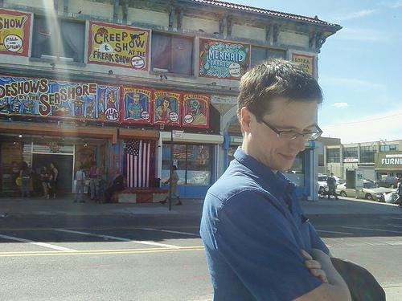

tim
Created: 2017-06-25 Sun 11:44
Table of Contents
- A Survey of Programming Languages
- ?
- Grace Hopper
- FLOW-MATIC
- COBOL
- COBOL
- ?
- John Backus
- Fortran
- Fortran
- John Backus also gave us notes
- ?
- John McCarthy
- Lisp
- Lisp
- ?
- Niklaus Wirth
- Pascal
- Pascal
- ?
- Dennis Ritchie
- C
- C
- ?
- Ken Thompson
- sh
- sh
- ?
- Lee McMahon
- sed
- sed
- ?
- Alfred Aho, Peter Weinberger, and Brian Kernighan
- Aho Weinberger Kernighan
- AWK
- Awk
- Awk
- ?
- Stephen Bourne
- sh
- sh
- ?
- Bill Joy
- csh
- csh
- ?
- Bjarne Stroustrup
- C++
- C++
- ?
- David Korn
- ksh
- ksh
- ?
- Joe Armstrong, Robert Verding, and Mike Williams
- Erlang
- Erlang
- ?
- Larry Wall
- Perl
- Perl
- ?
- John Ousterhout
- Tcl
- Tcl
- ?
- Brian Fox
- Bash
- Bash
- ?
- Guido van Rossum
- Python
- Python
- ?
- James Gosling, Patrick Naughton, and Mike Sheridan
- Java
- Java
- ?
- Yukihiro Matsumoto
- Ruby
- Ruby
- ?
- Rasmus Lerdorf
- PHP
- PHP
- ?
- Brendan Eich
- JavaScript
- JavaScript
- ?
- Anders Hejlsberg
- C#
- C#
- ?
- Don Syme
- F#
- F#
- ?
- Rich Hickey
- Clojure
- Clojure
- ?
- Robert Griesemer, Rob Pike, and Ken Thompson
- Go
- Go
- ?
- Chris Lattner
- Swift
- Swift
- ?
- José Valim
- Elixir
- Elixir
- ?
- Graydon Hoare
- Rust
- Rust
- ?
- Evan Czaplicki
- Elm
- Elm
- ?
- Sylvan Clebsch
- Pony
- Pony
- Thanks!
A Survey of Programming Languages
- @oylenshpeegul
- oylenshpeegul@gmail.com
?
Grace Hopper
FLOW-MATIC
- 1955 B-0 (Business Language Version 0)
- 1955 FLOW-MATIC
- 1960 COBOL
COBOL

COBOL
IDENTIFICATION DIVISION. PROGRAM-ID. HELLOWORLD. PROCEDURE DIVISION. MAIN. DISPLAY 'Hello, World!'. STOP RUN.
?
John Backus
Fortran
- 1957 externally available
- 1956 available at IBM
- 1954 first program run
Fortran
print *,"Hello, World!" end
John Backus also gave us notes
- ALGOL
- Backus-Naur form (BNF)
- Function-level programming
?
John McCarthy
Lisp
- 1958 designed
- 1960 "Recursive Functions of Symbolic Expressions and Their Computation by Machine, Part I"
- 1962 first complete compiler written in Lisp
Lisp
(print "Hello, World!")
?
Niklaus Wirth
Pascal
- 1966 Algol W
- 1970 Pascal
- 1978 Modula 2
- 1986 Oberon
Pascal
Begin Write('Hello, World!') End.
?
Dennis Ritchie
C
- 1969 started design
- 1972 appeared in Version 2 Unix
- 1978 K & R, The C Programming Language
C
#include <stdio.h> int main() { printf("Hello, World!\n"); return 0; }
?
Ken Thompson
sh
- 1971 appeared
- just called the shell then
- now called the Unix shell or Thompson shell
sh
echo "Hello, World!"
?
Lee McMahon
sed
- 1973 developed
- 1979 appeared in Version 7 Unix
sed
s/.*/Hello, World!/ q
?
Alfred Aho, Peter Weinberger, and Brian Kernighan
Aho Weinberger Kernighan
AWK
Awk
- 1977 appeared
- 1985 New Awk
- 1988 Aho, Weinberger, and Kernighan, The AWK Programming Language
Awk
BEGIN { print "Hello, world!" }
?
Stephen Bourne
sh
- 1977 appeared
- called the Bourne shell to distinguish it from regular Unix shell
- 1984 K & P, The Unix Programming Environment
sh
echo "Hello, World!"
?
Bill Joy
csh
- 1978 appeared
- 1981 tcsh, csh with TENEX-style completion
csh
echo "Hello, World!"
?
Bjarne Stroustrup
C++
- 1979 C with Classes
- 1983 C++
- 1985 Stroustrup, The C++ Programming Language
- 1998 C++98
- 2011 C++11
C++
#include <iostream> int main() { std::cout << "Hello, world!\n"; }
?

David Korn
ksh
- 1983 appeared
- 1988 ksh88 POSIX.2
- 1993 ksh93
- 2000 open sourced
ksh
echo "Hello, World!"
?

Joe Armstrong, Robert Verding, and Mike Williams
Erlang
- 1986 designed
- 1990 "Erlang: The Movie"
- 1998 open-sourced
Erlang
-module(hello). -export([hello/0]). hello() -> io:fwrite("Hello, World!\n").
?

Larry Wall
Perl
- 1987 designed, version 1 released
- 1991 Programming Perl (pink camel)
- 1994 version 5 released
- 1996 Programming Perl, 2e (blue camel)
- 2015 version 6 released
Perl
say 'Hello, World!';
?
John Ousterhout
Tcl
- 1988 designed
- 1990 released outside of Berkeley
- 1990 Expect
- 1991 Tk
Tcl
puts "Hello, World!"
?
Brian Fox
Bash
- 1988 started coding
- 1989 released
- Bourne-Again SHell
Bash
echo "Hello, World!"
?
Guido van Rossum
Python
- 1989 designed
- 1991 posted to alt.sources
- 1994 version 1 released
- 2008 version 3 released
Python
print("Hello, World!")
?
James Gosling, Patrick Naughton, and Mike Sheridan
Java
- 1991 Oak
- 1995 version 1.0
- 2007 open-sourced
Java
class HelloWorldApp { public static void main(String[] args) { System.out.println("Hello, World!"); } }
?
Yukihiro Matsumoto
Ruby
- 1993 conceived
- 1995 posted to Japanese newsgroups
- 1996 version 1 released
- 2001 Programming Ruby (pickaxe)
- 2013 version 2 released
Ruby
puts "Hello, World!"
?
Rasmus Lerdorf
PHP
- 1994 "Personal Home Page/Forms Interpreter" or PHP/FI
- 1995 "Personal Home Page Tools (PHP Tools) version 1.0"
- 1997 version 3, Zeev Suraski and Andi Gutmans
- 2000 version 4, Zend Engine 1.0
- 2004 version 5, Zend Engine II
PHP
<?php echo "Hello, World!"; ?>
?

Brendan Eich
JavaScript
- 1995 Mocha
- 1995 LiveScript in Netscape Navigator 2.0
- 1995 JavaScript in Netscape Navigator 2.0B3
- 1996 EcmaScript
- 2009 Node.js
- 2015 ES6 -> EcmaScript2015
JavaScript
console.log("Hello World!");
?
Anders Hejlsberg
C#
- 1999 Cool ("C-like Object Oriented Language")
- 2000 C# (and .NET)
C#
using System; class Program { static void Main() { Console.WriteLine("Hello, World!"); } }
?
Don Syme
F#
- 2005 version 1.0
F#
printfn "Hello, World!"
?

Rich Hickey
Clojure
- 2005 started designing
- 2007 initial release
- 2009 version 1.0 release
Clojure
(println "Hello, World!")
?

Robert Griesemer, Rob Pike, and Ken Thompson
Go
- 2007 started development
- 2009 announced
- 2012 version 1
- 2015 D & K, The Go Programming Language
Go
package main import "fmt" func main() { fmt.Println("Hello, World!") }
?
Chris Lattner
Swift
- 2010 developed
- 2014 version 1
- 2015-12-03 open sourced
Swift
print("Hello, World!")
?
José Valim
Elixir
- 2012 developed
- 2014 version 1
- 2015 version 1.1
- 2016 version 1.2
Elixir
IO.puts "Hello, World!"
?

Graydon Hoare
Rust
- 2009 started by Graydon Hoare in OCaml
- 2010 developed by Mozilla in Rust
- 2012 first pre-alpha release
- 2015 version 1.0
Rust
fn main() { println!("Hello, World!"); }
?
Evan Czaplicki
Elm
- 2011 designed (as his thesis)
- 2012 version 0.1 released in April
- 2015 version 0.16 in November
Elm
import Html exposing (span, text) import Html.Attributes exposing (class) main = span [class "welcome-message"] [text "Hello, World!"]
?
Sylvan Clebsch
Pony
- 2015 ponylang on github
Pony
actor Main new create(env: Env) => env.out.print("Hello, World!")
Thanks!
- @oylenshpeegul
- oylenshpeegul@gmail.com
<script type="text/javascript" src="org-html-slideshow.js"></script>